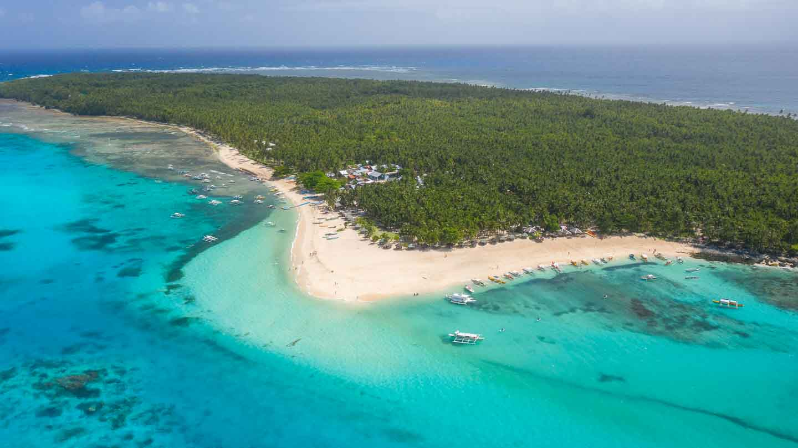
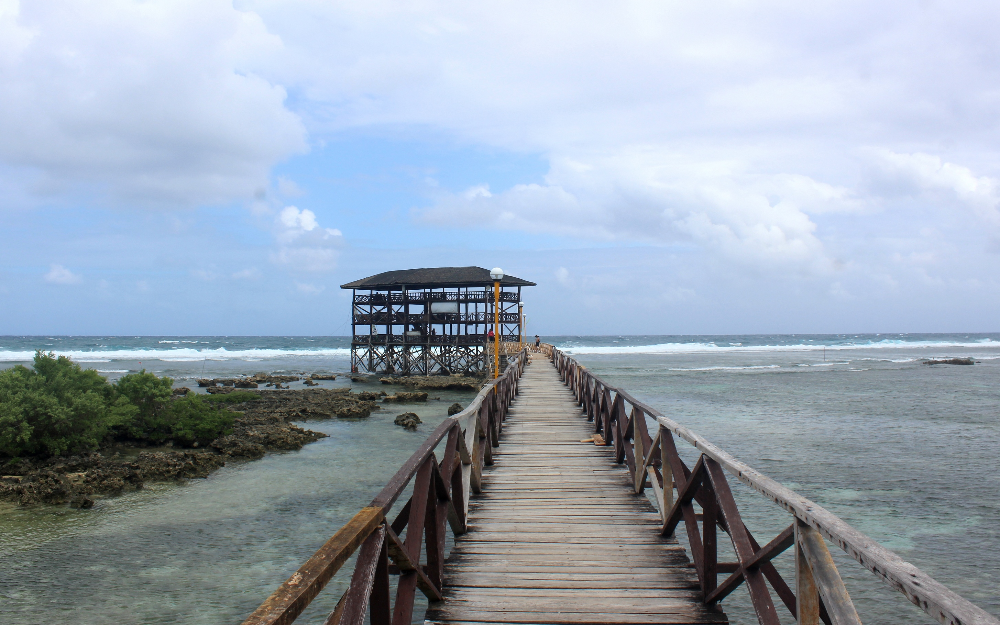
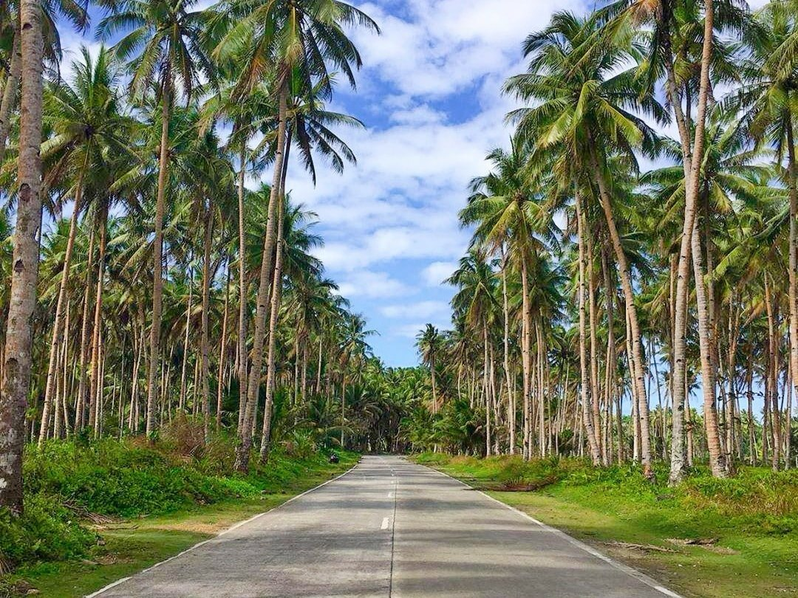

Place to visit in the Philippines
Home

Daku Island
Daku Island is the largest and most popular island to visit during a day of Siargao island hopping.
The easiest way to visit Daku Island is with a tour. These island-hopping tours usually make the same
circuit and stop at Daku Island, along with Naked Island and Guyam Island. If you prefer to tour the
islands on your own, it's also possible to hire a private boat. However, it's recommended that you
still make the same stopovers at Naked Island and Guyam Island. Due to their proximity to Daku, it
would be a shame to miss out on these two beautiful islands!

Cloud 9 Boardwalk and View Deck
Cloud 9 Boardwalk and View Deck is one of the top tourist attractions in Siargao. It is the spot
where you can have a wide view of the surfer dancing on the gigantic waves. The waves here are
perfect with a fresh sea breeze and an amazing landscape. Afraid of the waves? That's okay, you
can just walk on the boardwalk and do an amazing photo shoot. This spot is picture-perfect in the
afternoon because of the golden skyline with the surfers standing on their boards on top of the
rolling waves.

Burgos Coconut Road
Burgos Coconut Road even on the flight into Siargao, likely the first thing that will strike you is just how
absolutely covered this island is with different types of palm trees. The Palm Tree Road Siargao
is one of the most iconic spots on the island for snapping awesome travel photos. It's also a really
scenic road that you'll most likely drive down if you're already set on exploring the island by bike.
In this quick guide, I'll outline everything you need to know about the famous palm tree road,
including how to get here, what to expect, and a few tips on snapping a memorable photo.
Learn more.